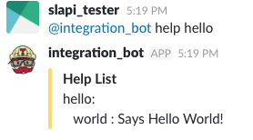
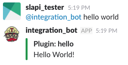

Lets dig into the help and see what it can do @bot help hello 
Ahh, so.. it helps to read instructions. Try @bot hello world 
What?! How easy was that? The built in reload option will let you add plugins on the fly or update them right from the chat room.
What’s Next?
This is where the step by step ends for now.
We are working on more documentation and plugins to cover.
We will also have a roadmap showing what upcoming and in what order for SLAPI. Until then, kick the tires and think about turning your favorite cli tool into a SLAPIN or make your own from scratch!